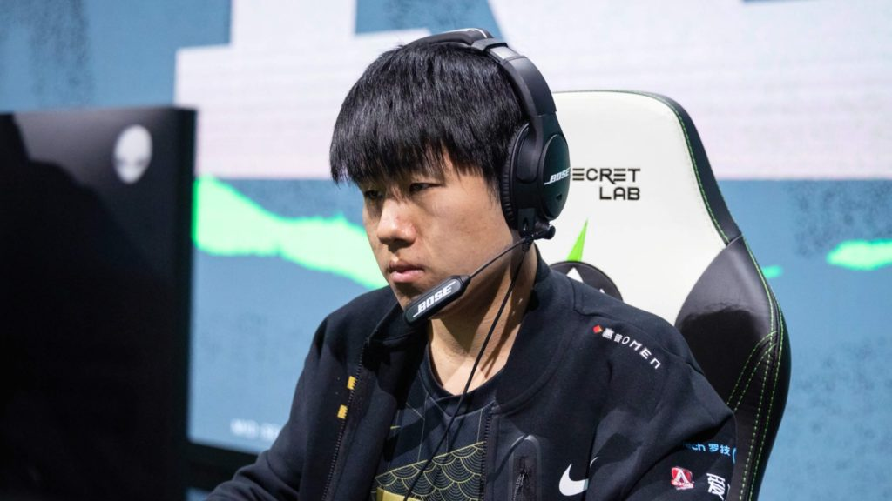
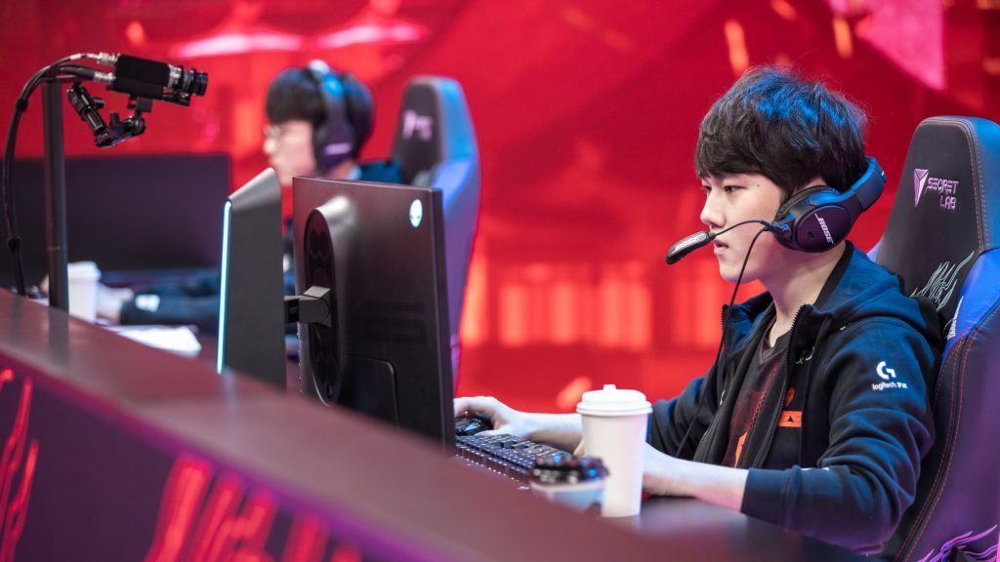
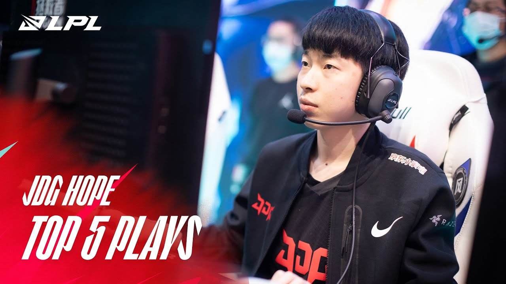
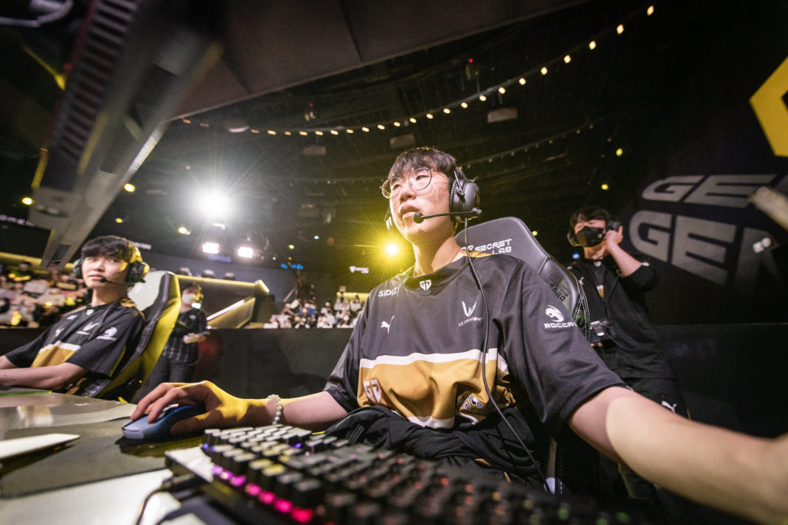
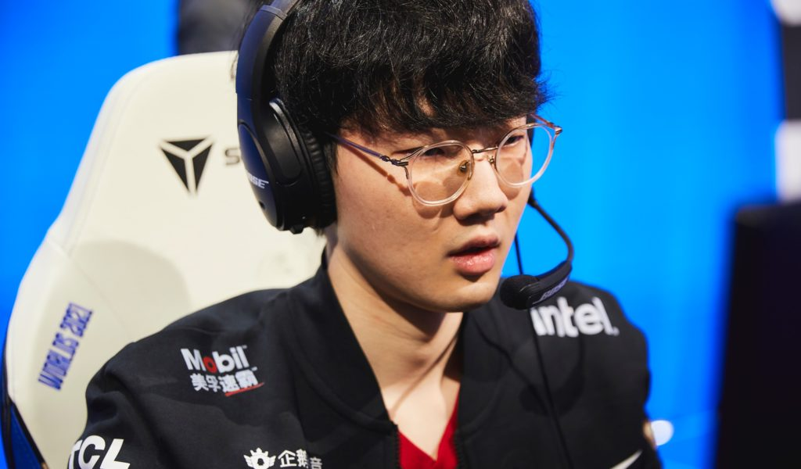

RNG ha ganado dos campeonatos internacionales en las últimas dos temporadas, y en el centro de ambas carreras por el título de MSI estuvo GALA. En el Campeonato Mundial del año pasado, GALA fue relegada al deber de Miss Fortune para RNG en siete de los 12 juegos del equipo. Es probable que tenga más oportunidades de expresar su mecánica en el torneo de este año, una ventaja para RNG. GALA ha publicado un KDA de 4.9 en eventos internacionales que se remontan a 2021 y terminó como líder general en asesinatos tanto en MSI 2021 como en MSI 2022, según el sitio de estadísticas de League , Oracle's Elixir . Si RNG profundiza en Worlds este año, GALA probablemente sea la razón.

Nunca puedes descartar a JackeyLove en el Campeonato Mundial. A pesar de que ha quedado relegado a un segundo plano frente a otros acarreos chinos de AD esta temporada, JackeyLove sigue siendo el tirador preciso que siempre ha sido. La única pregunta que está sobre la mesa para JackeyLove es si se inclinará hacia el estilo de juego más moderado y solidario que hizo en 2020 o el estilo feroz e implacable que adoptó durante su primer Mundial en 2018. De todos modos, es lo suficientemente bueno como para competir por la Copa del Invocador con cualquier enfoque.

En su primer año completo como titular de JD Gaming, Hope llevó al equipo a un campeonato de Summer Split y al primer sembrado de la región en Worlds. La esperanza es todo lo que querrías de un AD carry de "libro de texto". Con fuertes mecánicas y un gran dominio del metajuego, es el factor más constante en un equipo de JDG que llega al torneo como su favorito en cuanto a probabilidades. En un año en el que parece que cada región tiene un AD joven que se dirige a Worlds (Danny, Flakked y Gumayusi, entre otros), Hope es fácilmente el más intrigante de ver, principalmente porque es el único entre sus contemporáneos del Este que hace su debut mundial y tiene que demostrar si su destreza doméstica puede traducirse en el escenario internacional.

Ruler está teniendo un año de carrera y, a medida que se acerca Worlds, está alcanzando su ritmo justo a tiempo. Este verano, Gen.G tuvo un porcentaje de victorias más alto en juegos individuales que cualquier otro equipo en la historia de la LCK. Gen.G ha ganado 28 de sus últimos 31 juegos individuales, y Ruler es una razón importante de por qué. Solo en la gran final de la LCK contra T1, Ruler registró un marcador deslumbrante de 26/2/5. Ruler ha jugado contra 12 campeones diferentes este verano y tiene un porcentaje de victorias positivo en todos ellos, con récords invictos en ocho de ellos, según Games of Legends.

Viper ha estado entre los mejores ADC del mundo desde que estalló en 2019. Y después de ganar un Campeonato Mundial la temporada pasada, llega al torneo de este año como el mejor jugador en su posición una vez más. Viper prosperó incluso la temporada pasada cuando el meta se centró principalmente en las combinaciones de la mitad de la jungla. Si los acarreos de AD son un poco más favorables en el evento de este año, Viper será una fuerza incomparable. Y eso sin mencionar lo embrague que es el Viper. En el quinto juego de Worlds el año pasado, Viper registró un puntaje combinado de 19/3/25 en tres concursos separados de vida o muerte.
